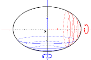

General Area Calculator
Elipsoide
V = 4⁄3 · Π · a · b · c -> El volumen es igual al producto de cuatro tercios de PI (3'1416...) por los semiejes.
Un elipsoide es una superficie curva cerrada cuyas tres secciones ortogonales principales son elípticas, es decir, son originadas por planos que contienen dos ejes cartesianos.
En matemáticas, es una cuádrica análoga a la elipse, pero en tres dimensiones.
Un elipsoide se obtiene al «deformar» una esfera, mediante una transformación homológica, en la dirección de sus tres diámetros ortogonales.